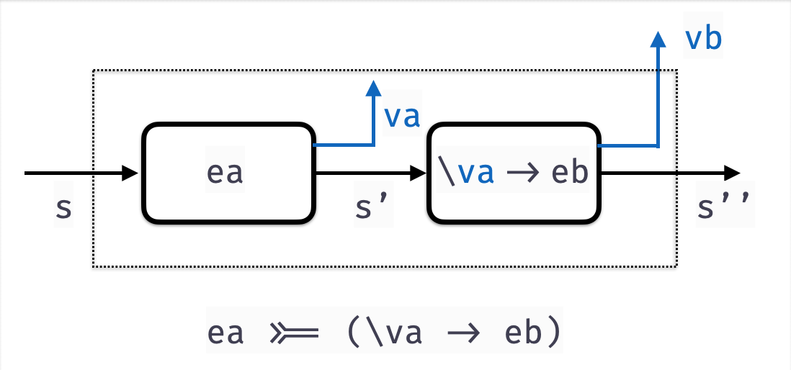

Before we continue …
A Word from the Sponsor!
They are just a versatile abstraction, like map or fold.
Parsers
A parser is a function that
- converts unstructured data (e.g.
String, array ofByte,…) - into structured data (e.g. JSON object, Markdown, Video…)
Every large software system contains a Parser
| System | Parses |
|---|---|
| Shell Scripts | Command-line options |
| Browsers | HTML |
| Games | Level descriptors |
| Routers | Packets |
| Netflix | Video |
| Spotify | Audio, Playlists… |
How to build Parsers?
Two standard methods
Regular Expressions
- Doesn’t really scale beyond simple things
- No nesting, recursion
Parser Generators
- Specify grammar via rules
- Tools like
yacc,bison,antlr,happy
- convert grammar into executable function
Grammars Don’t Compose!
If we have two kinds of structured objects Thingy and Whatsit.
To parse sequences of Thingy and Whatsit we must duplicate the rules
Thingies : Thingy Thingies { ... }
EmptyThingy { ... }
;
Whatsits : Whatsit Whatsits { ... }
EmptyWhatsit { ... }
;No nice way to reuse the sub-parsers for Whatsit and Thingy :-(
A New Hope: Parsers as Functions
Lets think of parsers directly as functions that
- Take as input a
String - Convert a part of the input into a
StructuredObject - Return the remainder unconsumed to be parsed later
A Parser a
- Converts a prefix of a
String - Into a structured object of type
aand - Returns the suffix
Stringunchanged
Parsers Can Produce Many Results
Sometimes we want to parse a String like
into a list of possible results
So we generalize the Parser type to
EXERCISE
Given the definition
Implement a function
QUIZ
Given the definition
Which of the following is a valid Parser Char
- that returns the first
Charfrom a string (if one exists)
-- A
oneChar = P (\cs -> head cs)
-- B
oneChar = P (\cs -> case cs of
[] -> [('', [])
c:cs -> (c, cs))
-- C
oneChar = P (\cs -> (head cs, tail cs))
-- D
oneChar = P (\cs -> [(head cs, tail cs)])
-- E
oneChar = P (\cs -> case cs of
[] -> []
cs -> [(head cs, tail cs)])
Lets Run Our First Parser!
>>> runParser oneChar "hey!"
[('h', "ey")]
>>> runParser oneChar "yippee"
[('y', "ippee")]
>>> runParser oneChar ""
[]Failure to parse means result is an empty list!
EXERCISE
Your turn: Write a parser to grab first two chars
When you are done, we should get
QUIZ
Ok, so recall
twoChar :: Parser (Char, Char)
twoChar = P (\cs -> case cs of
c1:c2:cs' -> [((c1, c2), cs')]
_ -> [])Suppose we had some foo such that twoChar' was equivalent to twoChar
What must the type of foo be?
A. Parser (Char, Char)
B. Parser Char -> Parser (Char, Char)
C. Parser a -> Parser a -> Parser (a, a)
D. Parser a -> Parser b -> Parser (a, b)
E. Parser a -> Parser (a, a)
EXERCISE: A forEach Loop
Lets write a function
such that we get the following behavior
>>> forEach [] (\i -> [i, i + 1])
[]
>>> forEach [10,20,30] (\i -> [show i, show (i+1)])
["10", "11", "20", "21", "30", "31"]
QUIZ
What does quiz evaluate to?
A. [10,20,30,0,1,2]
B. [10,0,20,1,30,2]
C. [[10,11,12], [20,21,22] [30,31,32]]
D. [10,11,12,20,21,22,30,31,32]
E. [32]
A pairP Combinator
Lets implement the above as pairP
forEach :: [a] -> (a -> [b]) -> [b]
forEach xs f = concatMap f xs
pairP :: Parser a -> Parser b -> Parser (a, b)
pairP aP bP = P (\s -> forEach (runParser aP s) (\(a, s') ->
forEach (runParser bP s') (\(b, s'') ->
((a, b), s'')
)
) Now we can write
QUIZ
What does quiz evaluate to?
A. [((h,h), "")]
B. [(h, "")]
C. [("", "")]
D. []
E. Run-time exception
Does the Parser a type remind you of something?
Lets implement the above as pairP
Parser is a Monad!
Like a state transformer, Parser is a monad!
We need to implement two functions
QUIZ
Which of the following is a valid implementation of returnP
data Parser a = P (String -> [(a, String)])
returnP :: a -> Parser a
returnP a = P (\s -> []) -- A
returnP a = P (\s -> [(a, s)]) -- B
returnP a = P (\s -> (a, s)) -- C
returnP a = P (\s -> [(a, "")]) -- D
returnP a = P (\s -> [(s, a)]) -- E
HINT: return a should just
- “produce” the parse result
aand - leave the string unconsumed.
Bind
Next, lets implement bindP
- we almost saw it as
pairP
bindP :: Parser a -> (a -> Parser b) -> Parser b
bindP aP fbP = P (\s ->
forEach (runParser aP s) (\(a, s') ->
forEach (runParser (fbP a) s') (\(b, s'') ->
[(b, s'')]
)
)
)The function
- Builds the
avalues out ofaP(usingrunParser) - Builds the
bvalues by callingfbP aon the remainder strings' - Returns
bvalues and the remainder strings''

The Parser Monad
We can now make Parser an instance of Monad

And now, let the wild rumpus start!
Parser Combinators
Lets write lots of high-level operators to combine parsers!
Here’s a cleaned up pairP
A Failure Parser
Surprisingly useful, always fails
- i.e. returns
[]no successful parses
QUIZ
Consider the parser
What is the value of
quiz1 |
quiz2 |
|
|---|---|---|
| A | [] |
[] |
| B | [('h', "ellow")] |
[('y', "ellow")] |
| C | [('h', "ellow")] |
[] |
| D | [] |
[('y', "ellow")] |